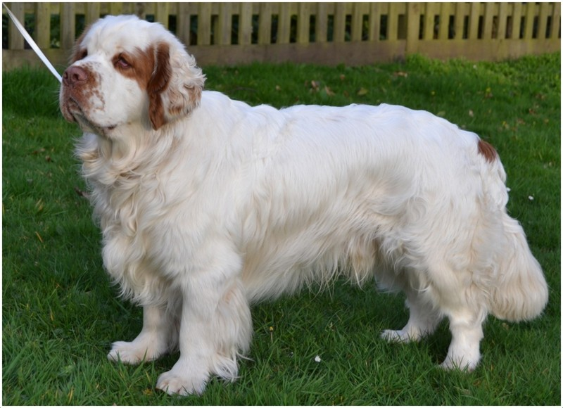
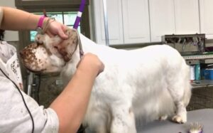
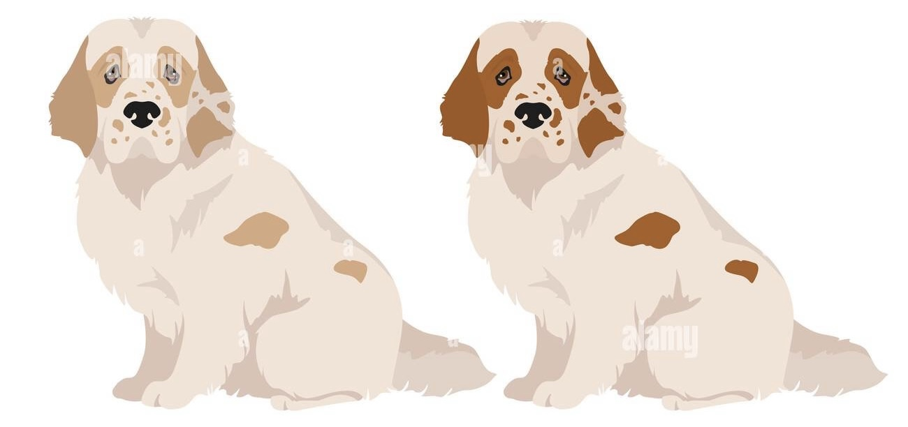
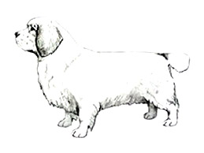

Breed Info -- Clumber Spaniel
The Clumber Spaniel is calm, dignified, and known for its gentle nature and distinctive heavy build.


Temperament
Calm, dignified, and affectionate with family. Deliberate and steady; aloof with strangers.

Grooming
Dense double coat needs regular brushing, especially during seasonal shedding. Regular ear cleaning and paw/feather trims recommended.

Colours
Predominantly white with lemon or orange markings.

ANKC Breed Standards
Official DogsWest and ANKC standards for the breed.